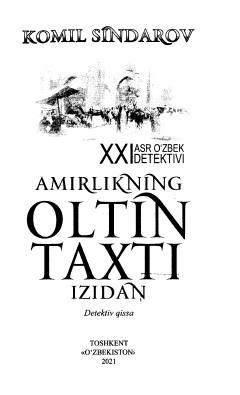

AOBuxoro amirining yo'qolgan xazinasi va sirli jinoyatlar haqidagi qiziqarli detektiv qissa.
Mazkur detektiv qissada Buxoroning so'nggi amiri Said Olimxonning yo'qolgan xazinasi bilan bog'liq sirli voqealar hikoya qilinadi. Prokuratura tergovchilari Faxriddin va Sanjarbek murakkab jinoyatni fosh etib, haqiqiy aybdorlarni adolat qarshisiga olib chiqadilar. Asar o'quvchini tergov jarayonining hayajonli va qiziqarli olamiga yetaklaydi.